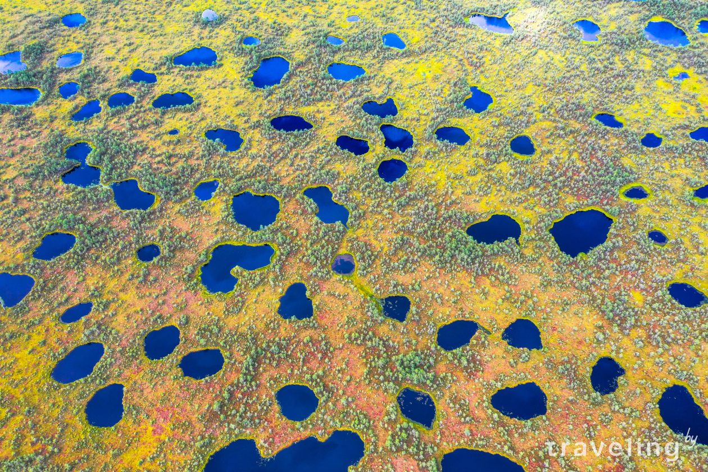
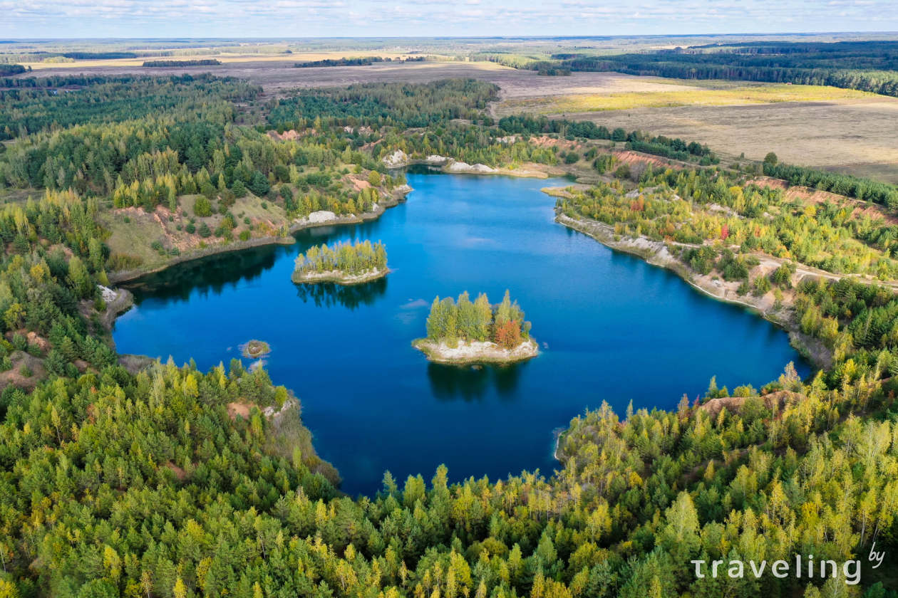

От марсианских пейзажей – к кратерам Меркурия. Именно такие ассоциации вызывают болота в заказнике Козьянский в Витебской области. В их западной части поозерский ледник сотворил что-то невообразимое, оставив на участке в 5 квадратных километров более 400 небольших озер. Козьяны – определенный визуальный антипод более раскрученной Ельни, которую вы тоже увидите чуть ниже. Но, если основной ельненской картинкой можно считать островки с соснами среди водной глади, то здесь наоборот – полоски суши среди сотен озер. Однако, проложенной тропы с настилом в Козьянском заказнике нет - значит нужен либо опытный проводник, либо тщательная подготовка и осторожность. Но смельчаки непременно увидят космос!

Еще один объект в подборке обязан своим появлением добыче мела. Отработанные и затопленные карьеры возле деревни Лозовица в Климовичском районе не могут похвастаться таким насыщенным цветом воды как, например, волковысские или кричевские. Зато цепляют схожестью с карельскими пейзажами — решают острова и березовые рощицы по берегам.